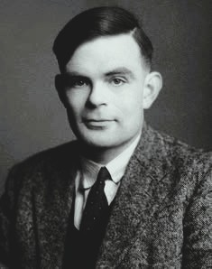

Philosophy of Mathematics is the philosophical study of mathematical
objects, mathematical truth, proof, knowledge, infinity, logic, and
the foundations of mathematics. It asks some of the deepest questions
about mathematics: Are numbers real? Are mathematical truths
discovered or invented? How can human beings know abstract
mathematical truths? Why does mathematics describe the physical world
with such extraordinary success? These questions connect mathematics
with metaphysics, epistemology, logic, philosophy of science,
philosophy of language, and computer science.
What Is Philosophy of Mathematics?
Philosophy of Mathematics is the branch of philosophy that investigates
the foundations, meaning, truth, existence, and knowledge of
mathematics. It asks what mathematical objects such as numbers, sets,
functions, geometric figures, structures, and infinite collections
actually are, if they are anything at all. Because many mathematical
entities cannot be directly observed through the senses, philosophy of
mathematics examines whether they exist independently of human minds and
language, whether mathematical truths describe an objective reality, and
how human beings can acquire reliable knowledge of an abstract
mathematical domain.
The central questions of philosophy of mathematics go beyond proving
individual theorems. Mathematicians ordinarily work within accepted
definitions, axioms, rules of inference, and established mathematical
practices, while philosophers can ask why those foundations should be
accepted and what they mean. This leads to questions about mathematical
truth, mathematical objects, axioms, proof, definitions, abstraction,
mathematical explanation, and the relationship between formal reasoning
and mathematical practice. Philosophy of mathematics therefore examines
not only how mathematics works, but also
what mathematics is and
why mathematical knowledge is possible.
What are mathematical objects, and do numbers, sets, and structures
really exist?
Are mathematical truths discovered or constructed by human beings?
What makes a mathematical statement true?
How can humans know mathematical truths about abstract objects?
Why are axioms accepted, and what role do definitions play in
mathematics?
What is a mathematical proof, and why does proof provide mathematical
justification?
Can mathematics be reduced to logic, formal rules, constructions, or
structures?
Philosophy of Mathematics is closely connected with the foundations of
mathematics and mathematical logic, but the disciplines ask different
kinds of questions. Foundational mathematics investigates formal
systems, axioms, consistency, models, computability, and logical
consequences, whereas philosophy asks what these formal results imply
about mathematical truth, existence, and knowledge. Results concerning
completeness, incompleteness, undecidability, and the limits of formal
systems have therefore become philosophically significant, even though
their precise mathematical meanings must not be reduced to the claim
that “mathematics cannot prove anything” or that “all mathematical truth
is unknowable.”
One of the most important divisions concerns the status of mathematical
objects. Mathematical Platonism and related forms of realism hold that
mathematical entities or structures have an objective status that does
not depend simply on individual human minds. Nominalist approaches
question or reject commitment to independently existing abstract
mathematical objects, while fictionalist approaches may treat
mathematical discourse as useful without accepting that its objects
literally exist. Structuralism instead emphasizes mathematical
structures and relations, arguing that mathematics may concern positions
within structures rather than independently identifiable objects.
Other major approaches focus on the way mathematics is produced and
justified. Logicism investigates whether mathematics can be grounded in
logic; formalism emphasizes formal systems, symbols, rules, and
derivations; and intuitionism places particular importance on
constructive mathematical activity and the conditions under which
mathematical objects and proofs can be constructed. These approaches
lead to different answers about the meaning of mathematical existence,
the status of classical principles, the nature of proof, and whether
mathematical truth is independent of human mathematical activity.
Platonism: mathematical objects exist independently
of human minds and practices.
Nominalism: mathematics need not commit us to
independently existing abstract objects.
Fictionalism: mathematical discourse can be useful
and systematically true within a practice without requiring literal
belief in mathematical entities.
Logicism: mathematics can be understood as
fundamentally grounded in logic.
Formalism: mathematics is understood in terms of
formal systems, symbols, rules, and derivations.
Intuitionism: mathematical truth is closely connected
with constructive mathematical activity and proof.
Structuralism: mathematics primarily concerns
structures and the relations that constitute them.
Philosophy of Mathematics also investigates infinity, mathematical
explanation, computation, mathematical discovery, and the relationship
between mathematics and the empirical sciences. The philosophical
problem of infinity arises because mathematics can reason about finite
and infinite collections in ways that have no straightforward physical
counterpart. Questions about computation ask what it means for a
function or problem to be computable, while questions about mathematical
explanation ask why some mathematical proofs provide deeper
understanding than others. The remarkable effectiveness of mathematics
in physics and other sciences also raises the question of why abstract
mathematical structures are so successful in describing the natural
world.
At its deepest level, Philosophy of Mathematics brings together
metaphysics, epistemology, logic, and philosophy of science. Its
metaphysical questions concern what mathematical reality consists of;
its epistemological questions concern how mathematical knowledge is
possible; its logical questions concern proof, inference, formal
systems, and consistency; and its philosophy-of-science questions
concern the role of mathematics in scientific explanation and
prediction. The subject therefore asks a fundamental question beneath
ordinary mathematical practice:
what kind of truth is mathematical truth, and what kind of reality,
if any, does mathematics reveal?
The Core Questions of Philosophy of Mathematics
Philosophy of Mathematics begins with questions that arise whenever
mathematical practice is examined at a foundational level. These
questions concern the nature of mathematical objects, the status of
mathematical truths, the source of mathematical knowledge, and the
relationship between mathematics and reality. They also explain why
apparently simple questions about numbers can lead to difficult
metaphysical and epistemological problems.
What Are Mathematical Objects?
Numbers, sets, functions, and other mathematical entities appear to have
properties that do not depend on particular physical objects. The number
two, for example, is not identical with any particular pair of objects.
Philosophers therefore ask whether numbers and other mathematical
entities exist independently of physical reality, exist only as
structures or relations, or are useful conceptual constructions rather
than independently existing things.
Are Numbers Real?
The question "Are numbers real?" is one of the most accessible ways into
the philosophy of mathematics. A realist may argue that numbers exist
independently of human thought, while a nominalist may deny that numbers
are genuine abstract objects. Fictionalist approaches may instead treat
mathematical discourse as useful without requiring literal commitment to
mathematical entities.
Are Mathematical Truths Discovered or Invented?
Mathematical practice often feels like discovery: once a theorem has
been proved, mathematicians commonly regard it as something that was
uncovered rather than arbitrarily created. Yet mathematical systems also
involve human choices about definitions, notation, axioms, and formal
frameworks. Philosophy asks how these aspects of mathematical practice
should be reconciled.
How Is Mathematical Knowledge Possible?
Mathematical knowledge presents a classic epistemological problem. If
numbers and other mathematical objects are abstract and outside ordinary
causal interaction, how could human beings acquire knowledge of them?
This problem, associated in modern discussion with figures such as Paul
Benacerraf, creates a tension between mathematical realism and an
account of how knowledge is acquired.
Why Is Mathematics So Effective in Science?
Mathematics is extraordinarily successful in describing physical
phenomena. Physical theories can be expressed through equations that
predict observations with remarkable precision. Philosophy asks why
mathematical structures developed for abstract purposes can also provide
powerful descriptions of nature, and whether this effectiveness supports
mathematical realism or can be explained in other ways.
Mathematical Objects and Ontology
Mathematical ontology asks what kinds of things mathematics is about.
Ordinary physical objects occupy locations in space and time and enter
into causal relationships. Mathematical objects such as numbers and sets
appear to behave differently: they are abstract, non-physical, and
apparently outside ordinary causal interaction. Understanding this
difference is central to the debate over mathematical realism.
Numbers
Numbers are among the most familiar mathematical objects, but their
philosophical status is surprisingly difficult to explain. Natural
numbers can be used to count physical objects, yet the number three is
not itself a physical collection of three things. Philosophers therefore
ask whether numbers are independently existing abstract objects,
positions within structures, or convenient features of mathematical
descriptions.
Sets
Set theory provides a foundational framework for large portions of
modern mathematics. Sets can contain numbers, functions, other sets, and
increasingly complex mathematical structures. The philosophical status
of sets therefore becomes especially important for any account that
treats mathematics as referring to independently existing abstract
entities.
Functions and Structures
Modern mathematics studies relationships and structures as extensively
as it studies individual objects. Functions connect elements of
different domains, while structures organize objects according to
specified relations. This structural perspective has encouraged
philosophers to ask whether mathematics fundamentally concerns
individual objects or patterns of relationships in which objects occupy
particular positions.
Geometrical Objects
Geometrical points, lines, planes, and spaces provide another example of
abstract mathematical entities. A physical drawing can represent a line,
but no physical line has exactly the properties of the ideal
mathematical object. This distinction between mathematical idealization
and physical representation raises important questions about abstraction
and the relationship between mathematics and the empirical world.
Abstract Objects
The broader category of abstract objects includes entities that are not
normally understood as physical objects located in space and time.
Mathematical realism often treats mathematical entities as abstract
objects, while nominalist approaches attempt to explain mathematical
discourse without such ontological commitments. The disagreement forms
one of the central metaphysical divisions in Philosophy of Mathematics.
Mathematical Platonism
Mathematical Platonism is the view that mathematical objects exist
independently of human minds, languages, and mathematical practices. On
a Platonist account, numbers and other mathematical entities are not
created when mathematicians invent notation or formulate theories.
Instead, mathematical inquiry discovers truths concerning an abstract
mathematical reality.
What Is Mathematical Platonism?
Mathematical Platonism is a form of mathematical realism inspired by the
broader philosophical idea that abstract entities can exist
independently of physical objects and human thought. The view explains
the apparent objectivity of mathematics by maintaining that mathematical
propositions can be true or false independently of whether anyone
believes them.
Mathematical Truth as Discovery
If mathematical objects exist independently of mathematicians, then
mathematical research can be understood as discovery rather than
invention. A theorem that has never been proved would nevertheless have
a determinate truth value under many Platonist interpretations. This
helps explain why mathematicians often experience mathematical work as
uncovering structures that constrain what can and cannot be proved.
The Problem of Access to Abstract Objects
Platonism faces an important epistemological challenge. If mathematical
objects are abstract and causally disconnected from human beings, it
becomes difficult to explain how humans acquire reliable knowledge of
them. This tension between mathematical ontology and mathematical
epistemology is one of the most enduring problems for mathematical
realism.
Gödel and Mathematical Platonism
Kurt Gödel defended a form of mathematical realism and argued that
mathematical concepts could provide access to mathematical objects in
ways not reducible to ordinary sensory perception. His philosophical
writings are frequently discussed in connection with Platonism, although
his position has important subtleties and should not be reduced to the
claim that all mathematical questions have obvious independently
existing answers.
Nominalism and Mathematical Fictionalism
Nominalist and fictionalist approaches challenge the idea that
mathematics requires a realm of independently existing abstract objects.
Their motivations differ, but both attempt to explain the usefulness and
apparent truth of mathematical discourse without accepting the same
ontology as mathematical Platonism.
Can Mathematics Exist Without Abstract Objects?
Nominalists attempt to explain mathematical claims using only objects or
structures that do not require abstract mathematical entities. This is a
difficult project because mathematics appears to quantify over numbers,
sets, and other abstract objects. The philosophical challenge is to
preserve enough of ordinary mathematical reasoning while avoiding
problematic ontological commitments.
Nominalism
Nominalism, broadly understood, rejects or seeks to avoid commitment to
abstract entities. Different nominalist programs use different
strategies, including reinterpretations of mathematical statements in
terms of concrete structures or other forms of reduction. The question
is whether such approaches can account for the richness and explanatory
power of modern mathematics.
Mathematical Fictionalism
Fictionalism treats mathematical discourse as useful in much the same
way that fictional discourse can be useful without requiring the literal
existence of the entities described. A fictionalist may therefore accept
ordinary mathematical language while denying that mathematical objects
literally exist. The position raises questions about why mathematical
theories can be so successful if their central entities are not real in
the ordinary sense.
Structuralism in Mathematics
Mathematical structuralism emphasizes structures and relations rather
than treating mathematical objects as isolated entities with identities
independent of their structural roles. On this approach, what matters
about a number may be the position it occupies within the natural-number
structure rather than some intrinsic nature possessed by that number
alone.
What Is Mathematical Structuralism?
Structuralism holds, in different forms, that mathematics primarily
studies structures and patterns of relations. The number two, for
example, can be understood through its position in the structure of the
natural numbers. This approach attempts to explain mathematical
objectivity while reducing the need to imagine that each mathematical
object possesses an independent intrinsic identity.
Numbers as Positions in Structures
Structuralism provides an intuitive way of understanding why different
systems can realize the same mathematical pattern. What matters is not
the material used to instantiate a structure but the relations among its
positions. This makes structuralism particularly relevant to modern
mathematics, where abstract structures often matter more than the
particular objects used to represent them.
Structuralism and Mathematical Objects
Structuralism must still answer difficult questions about what
structures themselves are and how mathematical structures can be known.
Some versions remain realist about structures, while others attempt to
develop structuralist accounts without committing to a separate realm of
abstract objects. These differences show how structuralism occupies an
important position between traditional realism and anti-realism.
The Major Foundations of Mathematics
The foundations of mathematics concern the principles on which
mathematical reasoning can be constructed and justified. During the
nineteenth and early twentieth centuries, developments in analysis,
geometry, set theory, and logic generated increasingly urgent questions
about rigor and consistency. Several major philosophical programs
attempted to explain what mathematics ultimately rests upon.
Logicism
Logicism attempts to show that mathematics can be derived, at least in
significant respects, from logic. Gottlob Frege developed one of the
most ambitious early logicist projects, and Bertrand Russell and Alfred
North Whitehead later pursued a related program in
Principia Mathematica. The project raises the question of
whether mathematical concepts can ultimately be explained through
logical principles.
Formalism
Formalism emphasizes mathematical systems consisting of symbols
manipulated according to explicit rules. David Hilbert's foundational
program sought to establish the consistency of important mathematical
systems using rigorous metamathematical methods. Formalism shifts
attention from an independently existing mathematical realm toward the
structure and rules of formal systems.
Intuitionism
Intuitionism, associated especially with L. E. J. Brouwer, treats
mathematics as grounded in constructive mathematical activity rather
than as the description of a completed abstract realm. Intuitionistic
mathematics does not accept every principle of classical mathematics,
most notably unrestricted use of the law of excluded middle. This
creates a distinctive conception of mathematical truth and proof.
Constructivism
Constructivist approaches require mathematical objects or proofs to be
constructed in an appropriate sense rather than merely asserted to exist
from the absence of contradiction. Constructive mathematics therefore
changes what counts as an acceptable proof in some contexts and provides
an important alternative to unrestricted classical reasoning.
Predicativism
Predicativist approaches seek to avoid certain forms of circularity or
impredicative definition in foundational mathematics. They attempt to
identify portions of mathematics that can be justified without relying
on problematic forms of self-reference. Predicativism remains part of
broader debates about how much mathematics can be reconstructed from
carefully restricted principles.
Logicism
Logicism is one of the most influential attempts to explain the
foundations of mathematics. Its central ambition is to demonstrate that
mathematical truths are, in an important sense, logical truths. Rather
than treating mathematics as a separate domain with its own unexplained
foundations, logicism seeks to derive mathematical concepts and
principles from logic.
Frege and the Logicist Program
Gottlob Frege developed a highly systematic logical language and
attempted to derive arithmetic from logical principles. His work
transformed modern logic and philosophy of mathematics, although his
original foundational project was undermined by the discovery of
Russell's paradox within the relevant assumptions concerning sets or
extensions.
Russell and Whitehead
Bertrand Russell and Alfred North Whitehead developed a major logicist
project in Principia Mathematica, published in three volumes
between 1910 and 1913. Their work introduced sophisticated logical
techniques intended to avoid paradoxes and reconstruct substantial
portions of mathematics from logical foundations.
Can Mathematics Be Reduced to Logic?
The logicist project raises a broader philosophical question about
whether mathematical concepts are genuinely distinct from logical
concepts. Even where strict reduction proves difficult, logicism had an
enormous influence on mathematical logic, analytic philosophy, and
subsequent investigations into the relationship between logic and
mathematics.
Formalism
Formalism emphasizes the manipulation of symbols according to explicitly
defined rules within formal mathematical systems. Instead of beginning
with the claim that mathematical symbols refer to independently existing
objects, formalist approaches can focus on what can be derived from a
system's axioms and rules. This perspective became particularly
important during foundational debates in the twentieth century.
Mathematics as Formal Systems
A formal mathematical system consists of specified symbols, formation
rules, axioms, and inference rules. A proof can then be understood as a
finite sequence of formally acceptable steps. This allows mathematical
reasoning to be studied independently of informal intuition and provides
a basis for rigorous analysis of proof and consistency.
Hilbert's Program
Hilbert's foundational program sought to secure mathematics by proving
the consistency of suitable formal systems through finitary or otherwise
carefully justified methods. The discovery of Gödel's incompleteness
theorems showed that important limits exist on what can be achieved by
sufficiently strong formal systems, transforming the philosophical
discussion of mathematical foundations.
Formal Rules, Symbols, and Proof
Formalism makes a sharp distinction between the syntactic manipulation
of symbols and their interpretation. This distinction became essential
to mathematical logic and computer science. Philosophically, however, it
leaves open questions about why formal systems should have mathematical
meaning and whether formal derivability alone captures mathematical
truth.
Intuitionism and Constructive Mathematics
Intuitionism emerged as a distinctive response to foundational problems
in mathematics. L. E. J. Brouwer argued that mathematics is
fundamentally grounded in constructive mental activity rather than in
the discovery of a completed abstract reality. This approach led to
significant differences between intuitionistic and classical
mathematics.
Brouwer and Intuitionism
Brouwer regarded mathematical objects as arising through constructions
of the mathematical mind. His position challenged the assumption that
every mathematically meaningful proposition must already possess a
determinate truth value independent of our ability to establish it
constructively.
Constructive Proof
In constructive mathematics, proving that an object exists generally
involves providing an appropriate construction or method for obtaining
it. This contrasts with some classical existence proofs that establish
existence indirectly, without producing an explicit example. The
distinction has consequences for logic, analysis, computation, and
mathematical practice.
The Law of the Excluded Middle
Classical logic accepts the law of excluded middle for every
proposition: a proposition is either true or false. Intuitionistic logic
does not accept unrestricted applications of this principle as generally
valid without a constructive basis. This difference is one of the
clearest ways in which intuitionistic mathematics departs from classical
mathematics.
Classical and Intuitionistic Mathematics
Intuitionistic mathematics is not simply a rejection of mathematics. It
develops alternative mathematical methods and has influenced
constructive analysis, type theory, computer science, and the theory of
formal verification. The debate therefore concerns competing conceptions
of proof, truth, and mathematical existence rather than a simple
disagreement about whether mathematics is valid.
Mathematical Truth and Proof
Mathematical proof is commonly regarded as the strongest form of
mathematical justification, but Philosophy of Mathematics asks what
proof actually establishes. Does a proof reveal an objective truth,
establish a relation within a formal system, or provide a construction
that gives meaning to a mathematical claim? Different philosophical
traditions answer these questions differently.
What Makes a Mathematical Statement True?
A mathematical statement may be considered true because it describes an
abstract mathematical reality, follows from accepted axioms within a
formal system, can be constructively established, or occupies a valid
position within a mathematical structure. The debate over mathematical
truth therefore follows directly from the earlier disagreements about
mathematical ontology and foundations.
Axioms and Definitions
Axioms provide starting assumptions within a mathematical framework,
while definitions specify the meanings or conditions associated with
mathematical concepts. Philosophers ask whether axioms are arbitrary
conventions, descriptions of mathematical reality, implicit definitions,
or principles justified by their role within broader mathematical
practice.
Deduction and Proof
Deductive reasoning allows mathematical conclusions to follow
necessarily from premises according to accepted rules. Proof therefore
provides a controlled method of establishing mathematical results. Yet
philosophical questions remain concerning whether deductive validity
itself requires a realist interpretation of the mathematical entities
appearing in the argument.
Formal Proof
A formal proof can be represented as a sequence of expressions generated
according to precise syntactic rules. Formalization makes it possible to
inspect every inferential step and provides a bridge between
mathematical reasoning and computation. Most ordinary mathematical
proofs, however, are written at a higher informal level and rely on
shared mathematical understanding.
Computer-Assisted Proof
Computers can verify extremely large formal proofs, search mathematical
spaces, and assist in discovering or checking mathematical results.
Computer-assisted mathematics raises philosophical questions about
understanding, explanation, trust, proof, and the role of human
mathematicians. A machine-verified proof can establish formal
correctness while still leaving open questions about how much conceptual
understanding the proof provides.
Infinity and the Philosophy of Mathematics
Infinity is one of the most philosophically challenging concepts in
mathematics. Ordinary experience contains finite objects, yet
mathematics successfully reasons about infinite sequences, sets, spaces,
and processes. Philosophy asks whether infinity represents something
genuinely existing, a potential process, or a conceptual framework
useful for mathematical reasoning.
What Is Mathematical Infinity?
Mathematical infinity does not refer to an extraordinarily large number.
Infinity is not ordinarily treated as a natural number that comes after
every finite number. Instead, mathematics uses different concepts of
infinite structures, infinite processes, and infinite cardinalities.
Distinguishing these concepts is essential to understanding
philosophical debates about infinity.
Potential and Actual Infinity
A potential infinity can be understood as a process that can continue
without a final stage, while an actual infinity is treated as a
completed infinite totality. Ancient Greek philosophers, particularly
Aristotle, distinguished these ideas in influential ways. Modern set
theory subsequently developed rigorous mathematical theories involving
actual infinite sets.
Cantor and Infinite Sets
Georg Cantor demonstrated that infinite sets can have different
cardinalities and that the real numbers are not equinumerous with the
natural numbers. His work transformed mathematical conceptions of
infinity and generated major philosophical questions about the existence
and hierarchy of infinite mathematical objects.
Paradoxes of Infinity
Infinite structures often behave in ways that conflict with finite
intuition. Hilbert's Hotel illustrates how an infinite collection can
remain the same size after additional members are added. Such examples
are not contradictions in standard mathematics, but they reveal why
philosophical analysis of infinity requires careful distinction between
finite and infinite reasoning.
Set Theory and Mathematical Foundations
Set theory became a central foundation for modern mathematics because
many mathematical objects can be represented using sets and relations
among sets. At the same time, naive reasoning about sets produced
paradoxes that forced mathematicians and philosophers to reconsider the
principles governing mathematical collections.
Why Are Sets Important?
Sets provide a general framework for organizing mathematical objects.
Numbers, functions, relations, and many other structures can be
represented in set-theoretic terms. This foundational role makes the
philosophical interpretation of sets especially important for
mathematical realism and anti-realism.
Axiomatic Set Theory
Axiomatic set theories restrict which sets may be formed and which
operations are legitimate. Rather than allowing unrestricted formation
of collections, axiomatic systems establish carefully specified
principles. This approach was developed in response to paradoxes that
emerged from less restricted conceptions of sets.
ZFC
Zermelo-Fraenkel set theory with the Axiom of Choice, commonly
abbreviated ZFC, is one of the standard foundational frameworks for
modern mathematics. It provides axioms from which large portions of
ordinary mathematics can be formalized. Philosophically, however, the
existence and interpretation of sets remain open questions.
The Continuum Hypothesis
The Continuum Hypothesis concerns whether there is a cardinality
strictly between that of the natural numbers and that of the real
numbers. Its status became a landmark in twentieth-century foundations
because it was shown to be independent of the standard ZFC axioms,
assuming the relevant consistency conditions. The result illustrates
that mathematical truth and formal derivability can come apart in
important ways.
Set Theory and Category Theory
Set theory is not the only foundational framework for mathematics.
Category theory emphasizes structures, mappings, and relationships and
has become a powerful language across modern mathematics. Philosophers
and mathematicians continue to debate how set-theoretic and categorical
approaches should be understood as foundations or organizing frameworks
for mathematical practice.
Gödel, Incompleteness, and the Limits of Mathematics
Kurt Gödel's incompleteness theorems transformed twentieth-century logic
and Philosophy of Mathematics. They established fundamental limitations
on what sufficiently expressive formal systems can prove about
arithmetic. The theorems are often misunderstood in popular discussions,
so their philosophical significance must be distinguished carefully from
claims that "mathematics is impossible" or that every mathematical truth
is unknowable.
Gödel's First Incompleteness Theorem
Roughly stated, the first incompleteness theorem shows that any
consistent formal system satisfying certain conditions and capable of
expressing a sufficient amount of arithmetic contains statements that
cannot be proved within that system. The result demonstrates that no
single suitable formal system can capture every arithmetic truth through
its own formal proofs.
Gödel's Second Incompleteness Theorem
Gödel's second incompleteness theorem shows, again under appropriate
assumptions, that a sufficiently strong consistent formal system cannot
establish its own consistency using only the methods available within
that system. This result placed important limits on foundational
programs that sought a completely self-certifying formal foundation for
mathematics.
What Does Incompleteness Mean?
Incompleteness does not mean that mathematics contains contradictions,
nor does it mean that mathematicians can never know mathematical truths.
Instead, it concerns the relationship between formal systems,
provability, consistency, and arithmetic truth. Its philosophical
consequences have been debated extensively in relation to formalism,
Platonism, mathematical knowledge, and the nature of mathematical
reasoning.
Does Gödel Show That Mathematics Is Incomplete?
The phrase "mathematics is incomplete" can be misleading because
incompleteness applies to formal systems meeting specific conditions
rather than to mathematics as a single undifferentiated object.
Different mathematical systems can have different strengths and
limitations. Gödel's theorems therefore concern the formalization of
mathematics and the limits of proof rather than demonstrating that
mathematical reasoning as a whole has failed.
Computation and Mathematics
The development of modern computer science created a new connection
between mathematics, logic, and computation. Questions that once
concerned abstract mathematical possibility can now also concern what
can be computed by an algorithm, what can be formally verified, and
whether computational procedures can reproduce or extend aspects of
mathematical reasoning.
Algorithms and Mathematical Reasoning
An algorithm provides a systematic procedure for solving a problem or
producing an output from specified inputs. Philosophers of mathematics
and computation ask whether mathematical reasoning can be understood
fundamentally in algorithmic terms or whether mathematical understanding
includes forms of insight that cannot be reduced to mechanical
procedures.
Computability
Computability theory investigates which functions and problems can be
solved by effective computational procedures. The work of Alan Turing
and other pioneers established rigorous frameworks for studying the
limits of computation. These results are philosophically significant
because they clarify the boundary between what can be calculated and
what may remain mathematically definable but computationally
inaccessible.
Turing and Computation
Alan Turing's mathematical model of computation became foundational for
computer science and discussions of mechanical reasoning. His work also
contributed to broader philosophical questions concerning algorithms,
formal systems, intelligence, and the relationship between mathematical
reasoning and computation.
Computer Proofs and Automated Mathematics
Automated theorem proving and proof assistants can verify mathematical
arguments according to formal rules. These technologies raise questions
about whether a proof must be understood by a human to count as
mathematical knowledge, whether verification differs from explanation,
and how computational tools should change our conception of mathematical
practice.
Mathematics and Reality
Mathematics is not only an abstract intellectual discipline; it is also
one of the most successful tools for describing the physical universe.
Equations can model motion, fields, probability, geometry, quantum
systems, and spacetime. This extraordinary relationship raises one of
the deepest questions in Philosophy of Mathematics: why should abstract
mathematical structures describe nature so effectively?
Why Does Mathematics Describe Nature?
Mathematical theories often capture regularities that appear in the
physical world with remarkable precision. Philosophers ask whether this
success suggests that physical reality itself has an inherently
mathematical structure or whether mathematics succeeds because human
beings select, construct, and refine mathematical models that are
particularly useful for representing observed regularities.
The Unreasonable Effectiveness of Mathematics
Eugene Wigner famously described the "unreasonable effectiveness" of
mathematics in the natural sciences. The philosophical puzzle concerns
the surprising extent to which mathematical structures developed
independently of particular empirical problems can later become central
to physical theories.
Mathematics and Physics
Physics provides some of the strongest examples of mathematics
functioning as a language of nature. Geometry became central to general
relativity, while advanced mathematical structures play major roles in
quantum mechanics and contemporary theoretical physics. Philosophy
examines whether such applications reveal something metaphysical about
the world or primarily demonstrate the effectiveness of mathematical
modeling.
Mathematics as a Model of Reality
Mathematical models simplify reality by selecting variables, structures,
and relationships relevant to a particular explanatory purpose. A model
can be mathematically precise without being a complete representation of
the physical world. This distinction connects Philosophy of Mathematics
with Philosophy of Science and raises questions about abstraction,
idealization, explanation, and scientific representation.
Mathematical Knowledge and Epistemology
Mathematical knowledge is often regarded as a paradigm of certainty, yet
its philosophical basis remains controversial. Human beings can
apparently know necessary truths about entities that cannot be observed
directly. This creates a distinctive epistemological problem concerning
the source, justification, reliability, and limits of mathematical
knowledge.
How Do We Know Mathematical Truths?
Different philosophical traditions explain mathematical knowledge
through rational intuition, logical deduction, constructive activity,
formal derivation, structural understanding, or other mechanisms. The
disagreement reflects the deeper question of whether mathematical truths
exist independently of human thought and, if they do, how humans can
know them.
Intuition and Mathematical Knowledge
Mathematicians often describe mathematical insight as involving
intuition, visualization, pattern recognition, or conceptual
understanding. Philosophers ask whether such intuition provides genuine
evidence or whether mathematical knowledge ultimately depends upon
formal reasoning and proof. This question is particularly important for
understanding how mathematical discovery actually occurs.
A Priori Knowledge
Mathematical knowledge has traditionally been associated with a priori
knowledge: knowledge that does not depend directly upon particular
empirical observations. Kant's philosophy gave mathematics an important
place in his account of a priori knowledge, although subsequent
developments in logic and mathematics challenged parts of his framework.
Benacerraf's Epistemological Problem
Paul Benacerraf famously highlighted a tension between mathematical
realism and plausible causal accounts of knowledge. If mathematical
objects are abstract and causally inaccessible, it becomes difficult to
explain how humans can acquire reliable knowledge of them. This problem
continues to influence contemporary debates about Platonism and
mathematical epistemology.
Mathematics, Logic, and Language
Mathematics depends upon specialized systems of symbols, definitions,
logical relations, and formal and informal modes of expression.
Philosophy of Language and Logic therefore provide important tools for
understanding mathematical statements. Questions about meaning,
reference, truth, formal syntax, and inference all arise within
mathematical practice.
Mathematical Language
Mathematical notation allows complex structures and relationships to be
expressed compactly and precisely. Philosophers ask whether mathematical
symbols merely function as convenient notation or whether they refer to
independently existing mathematical objects. This question connects
mathematical semantics with the broader debate between realism and
anti-realism.
Logic and Mathematical Reasoning
Logic provides formal tools for representing mathematical arguments and
examining whether conclusions follow from premises. Modern mathematical
logic grew from attempts to clarify the foundations of mathematics,
making the relationship between logic and mathematics central to both
disciplines.
Definitions and Meaning
Mathematical definitions determine how concepts are introduced and used
within a mathematical theory. Philosophers investigate whether
definitions create new objects, describe existing structures, or
establish conceptual frameworks for reasoning. The issue becomes
especially significant when comparing different foundational approaches
to mathematics.
Mathematical Truth and Semantics
A mathematical sentence can be considered true within a formal
interpretation, derivable from a specified set of axioms, or true of an
intended mathematical structure, depending on the philosophical
framework. The relationship between syntax, semantics, proof, and truth
is therefore one of the central conceptual problems linking mathematical
logic with Philosophy of Mathematics.
Historical Development of Philosophy of Mathematics
Philosophical questions about mathematics have accompanied mathematics
since antiquity. Ancient thinkers asked about the nature of number,
geometry, infinity, mathematical objects, and mathematical knowledge.
Later developments in logic, algebra, analysis, set theory, and
computation repeatedly transformed the philosophical questions that
mathematics seemed capable of raising.
Ancient Greek Philosophy
Pythagorean traditions emphasized the significance of number, while
Plato connected mathematics with the intelligible realm and the pursuit
of knowledge beyond changing sensory appearances. Aristotle developed a
different account of mathematical abstraction and distinguished
mathematical entities from independently existing Platonic Forms. These
disagreements established enduring questions about mathematical
ontology.
Medieval and Scholastic Thought
Medieval philosophers continued to examine mathematical abstraction,
infinity, necessity, and the relationship between mathematical knowledge
and reality. Scholastic thinkers worked within broader theological and
metaphysical frameworks, asking how mathematical objects should be
understood in relation to creation, intellect, and the structure of
reality.
Early Modern Philosophy
The rise of modern science transformed the philosophical status of
mathematics. Descartes connected mathematics with method and rational
inquiry, while Leibniz developed a powerful vision of logic,
calculation, and symbolic reasoning. Kant later argued that mathematics
involved forms of a priori intuition, giving mathematical knowledge a
central role in his theory of cognition.
Nineteenth-Century Foundations
The nineteenth century witnessed major developments in non-Euclidean
geometry, analysis, set theory, and the rigorization of mathematics.
These developments challenged older assumptions about mathematical
necessity and created new foundational problems. Frege's logicism and
Cantor's theory of sets became especially influential in shaping modern
Philosophy of Mathematics.
Twentieth-Century Foundations
The twentieth century brought intense foundational debates involving
logicism, formalism, intuitionism, axiomatic set theory, and
mathematical logic. Hilbert's program, Gödel's incompleteness theorems,
Turing's theory of computation, and later developments in structuralism
and mathematical practice transformed philosophical thinking about
proof, truth, and mathematical existence.
Contemporary Philosophy of Mathematics
Contemporary Philosophy of Mathematics continues to examine realism and
anti-realism while expanding toward structuralism, fictionalism,
naturalism, mathematical practice, category theory, computation, and
applications in science. The field now combines historical philosophical
questions with highly technical developments in modern mathematics and
logic.
Frege transformed the philosophy of mathematics and mathematical logic
through his attempt to derive arithmetic from logic. His work on
numbers, concepts, logic, and foundations profoundly influenced
analytic philosophy even though his original foundational system
encountered serious difficulties.
Hilbert played a central role in twentieth-century mathematical
foundations. His formalist orientation and foundational program sought
rigorous methods for securing mathematics and stimulated major
developments in proof theory and mathematical logic.
"We must know. We will know."
Kurt Gödel
Gödel's incompleteness theorems established fundamental limitations on
sufficiently expressive formal systems. He also defended a form of
mathematical realism and contributed significantly to logic, set
theory, and the philosophical interpretation of mathematics.
"Either mathematics is too big for the human mind or the human mind is
more than a machine."

Alan Turing
Turing developed a rigorous mathematical theory of computation and
established fundamental results concerning computability. His work
connected mathematical logic with computer science and influenced
philosophical debates about algorithms, formal reasoning, and machine
intelligence.
"We can only see a short distance ahead, but we can see plenty there
that needs to be done."
Philosophy of Mathematics and Other Fields
Philosophy of Mathematics is connected to nearly every major area of
philosophy. Questions about mathematical objects belong to metaphysics,
questions about mathematical knowledge belong to epistemology, questions
about proof belong to logic, and questions about mathematical models
connect the field with Philosophy of Science. These connections make
mathematics an important bridge between abstract philosophy and formal
intellectual disciplines.
Mathematics and Logic
Logic provides formal methods for analyzing mathematical reasoning,
while mathematics supplies important domains in which logical systems
can be studied. The relationship became especially important through the
development of modern mathematical logic and foundational programs such
as logicism and formalism.
Mathematics and Metaphysics
Questions about whether numbers, sets, structures, and other
mathematical objects exist are fundamentally metaphysical questions.
Mathematical Platonism, nominalism, fictionalism, and structuralism
therefore represent competing metaphysical accounts of the nature of
mathematical reality.
Mathematics and Epistemology
Mathematical epistemology asks how mathematical truths can be known and
justified. The problem is particularly challenging for realist views
because abstract mathematical objects are not normally observable or
causally accessible. This creates a direct connection between
mathematical ontology and theories of knowledge.
Mathematics and Philosophy of Science
Scientific theories frequently depend upon mathematics to formulate
laws, construct models, make predictions, and explain physical
phenomena. Philosophy of Science therefore raises questions about
mathematical representation, idealization, explanation, and the
remarkable applicability of mathematics to nature.
Mathematics and Philosophy of Language
Mathematical statements use symbols, definitions, formal languages, and
specialized forms of reference. Philosophy of Language helps clarify
questions about what mathematical terms mean, whether mathematical
statements refer to abstract objects, and how mathematical truth should
be understood.
Mathematics and Computer Science
Computer science grew partly from mathematical logic and theories of
computation. Algorithms, computability, formal verification, type
theory, automated theorem proving, and artificial intelligence all
create contemporary connections between mathematics and computation.
Contemporary Philosophy of Mathematics
Contemporary Philosophy of Mathematics does not revolve around a single
accepted theory. Instead, it contains competing realist and anti-realist
positions, different accounts of mathematical objects and structures,
and debates about proof, practice, explanation, and mathematical
knowledge. Developments in logic, computer science, category theory, and
scientific modeling continue to reshape the field.
Realism and Anti-Realism
Contemporary philosophers continue to debate whether mathematical truths
describe a mind-independent reality or arise through human mathematical
practices and conceptual frameworks. Platonism represents one
influential realist position, while nominalism, fictionalism, and some
forms of constructivism offer different anti-realist or non-Platonist
alternatives.
Structuralism
Structuralism has become an important attempt to explain mathematical
objectivity without treating individual mathematical objects as
possessing mysterious intrinsic identities. It emphasizes the relations
and positions that constitute mathematical structures and therefore
connects mathematical ontology with modern mathematical practice.
Naturalism
Naturalistic approaches argue that Philosophy of Mathematics should take
seriously what mathematics and the sciences actually reveal about
mathematical practice, cognition, and foundations. Rather than beginning
from purely philosophical intuitions about what mathematics must be,
naturalists investigate mathematics as an existing intellectual
practice.
Computational Mathematics
Modern mathematics increasingly interacts with algorithms,
computer-assisted proofs, proof assistants, numerical simulation, and
automated reasoning. Computational developments raise new philosophical
questions about the nature of proof, mathematical understanding,
discovery, and the division of labor between humans and machines.
Mathematical Practice
Some contemporary philosophers study mathematics as it is actually
practiced, including the use of diagrams, examples, experimentation,
analogy, computation, informal reasoning, and collaboration. This
approach challenges the assumption that philosophy of mathematics should
focus only on idealized formal proof and asks what philosophical lessons
can be learned from real mathematical activity.
Famous Problems and Thought Experiments in Philosophy of Mathematics
Zeno's Paradoxes
Zeno's paradoxes raise difficult questions about motion, divisibility,
continuity, and infinity. They became historically important for
philosophical reflection on mathematical concepts that later received
rigorous treatment through developments in analysis and the mathematics
of limits.
Russell's Paradox
Russell's paradox arises from unrestricted assumptions about sets and
demonstrates that certain apparently natural principles of set formation
lead to contradiction. The paradox played a major role in the
development of axiomatic set theory and transformed philosophical
thinking about mathematical foundations.
Hilbert's Hotel
Hilbert's Hotel is a thought experiment illustrating surprising
properties of infinite sets. Even when every room in an imagined hotel
is occupied, additional guests can still be accommodated by reorganizing
the occupants. The example helps explain why infinite cardinalities
behave differently from finite numbers.
Banach–Tarski Paradox
The Banach–Tarski paradox demonstrates that, under the axioms of
standard set theory including the Axiom of Choice, a three-dimensional
ball can be decomposed into finitely many highly non-measurable pieces
that can be reassembled into two balls of the same size as the original.
The result is mathematically rigorous but raises striking questions
about mathematical existence and physical interpretation.
Benacerraf's Problem
Benacerraf's famous discussions of mathematical ontology and
epistemology expose a tension between different accounts of what numbers
are and how humans can know facts about them. The problem remains a
central challenge for attempts to combine mathematical realism with a
naturalistic theory of knowledge.
The Continuum Hypothesis
The Continuum Hypothesis asks whether an intermediate cardinality exists
between the natural numbers and the real numbers. Its independence from
the standard ZFC axioms, assuming consistency, illustrates how a
mathematically meaningful question may remain undecidable within a
particular foundational system.
Philosophy of Mathematics FAQ
What is Philosophy of Mathematics?
Philosophy of Mathematics studies the nature of mathematical objects,
mathematical truth, proof, knowledge, infinity, foundations, and the
relationship between mathematics and reality. It asks philosophical
questions that arise from the practice and foundations of mathematics.
Are numbers real?
Philosophers disagree. Mathematical Platonists generally regard numbers
as independently existing abstract objects, while nominalists deny or
avoid such entities. Structuralist and fictionalist approaches offer
other ways of understanding mathematical discourse and objectivity.
Are mathematical truths discovered or invented?
The answer depends on one's philosophical theory of mathematics. Realist
views generally emphasize discovery of objective mathematical truths,
while some anti-realist and formalist approaches emphasize human
construction, formal systems, or mathematical practices.
What is mathematical Platonism?
Mathematical Platonism is the view that mathematical objects exist
independently of human minds and mathematical practices. Mathematical
truths are therefore understood as facts about an abstract mathematical
reality rather than merely consequences of human conventions.
What is mathematical formalism?
Mathematical formalism emphasizes formal systems, symbols, axioms, and
rules of inference. It is associated historically with Hilbert's
foundational program, although "formalism" covers a range of
philosophical interpretations rather than one completely uniform
doctrine.
What is intuitionism in mathematics?
Intuitionism is a philosophy of mathematics associated particularly with
Brouwer that emphasizes constructive mathematical activity. It rejects
some principles of classical mathematics, including unrestricted
acceptance of the law of excluded middle, and develops an alternative
conception of proof and truth.
What is mathematical structuralism?
Mathematical structuralism emphasizes structures and relationships
rather than treating mathematical objects as isolated entities with
independent intrinsic identities. Numbers, for example, can be
understood through the positions they occupy within mathematical
structures.
What did Gödel prove?
Gödel's incompleteness theorems established important limitations on
sufficiently strong formal systems capable of expressing arithmetic.
They show that such systems cannot, under appropriate consistency
assumptions, prove every arithmetic truth within the system and cannot
establish their own consistency in the relevant way.
Why is mathematics so effective in science?
Mathematics provides precise structures for representing relationships,
patterns, quantities, and processes found in scientific investigation.
Philosophy asks why these abstract structures work so effectively as
models of physical reality and whether this effectiveness supports any
particular metaphysical view of mathematics.
How is mathematical knowledge possible?
Philosophers have proposed different explanations involving reason,
intuition, construction, formal proof, structural understanding, and
mathematical practice. The problem becomes especially difficult for
Platonism because abstract mathematical objects are not normally
observable or causally accessible.
Is mathematics invented or discovered?
This question has no universally accepted philosophical answer. Humans
clearly invent mathematical notation, definitions, terminology, and
formal systems, but mathematicians also encounter results that seem
constrained by the structures they investigate. The
discovery-versus-invention debate therefore depends on deeper
assumptions about mathematical truth and existence.
What is the philosophy of mathematical infinity?
It is the philosophical study of what infinite mathematical structures
mean and whether actual infinity should be regarded as mathematically or
metaphysically legitimate. Questions about infinite sets, limits,
cardinalities, and potential versus actual infinity are central to this
area.
Why Study Philosophy of Mathematics?
Philosophy of Mathematics reveals that even the most familiar
mathematical concepts raise profound philosophical questions. Numbers,
sets, infinity, proof, and mathematical truth may appear straightforward
in ordinary mathematical practice, yet each becomes philosophically
complex when we ask what these concepts actually mean and why
mathematical reasoning works.
Studying the subject also develops a deeper understanding of logic and
rational argument. Questions about proof, consistency, axioms, formal
systems, and computability show how philosophical reasoning interacts
with highly technical mathematics. The subject is therefore valuable not
only for philosophers but also for students of mathematics, logic,
computer science, physics, and the foundations of knowledge.
Philosophy of Mathematics also provides an unusually clear case study in
the relationship between abstract thought and empirical reality.
Mathematics can describe physical systems with extraordinary precision
while dealing with entities that are not themselves physical objects.
Understanding this relationship helps clarify broader philosophical
questions about scientific explanation, models, abstraction, and the
structure of reality.
Finally, Philosophy of Mathematics teaches intellectual precision. It
requires careful distinctions between truth and proof, existence and
construction, formal derivability and mathematical meaning, and
mathematical models and physical reality. These habits of reasoning are
useful far beyond mathematics and connect directly with the wider aims
of philosophy.